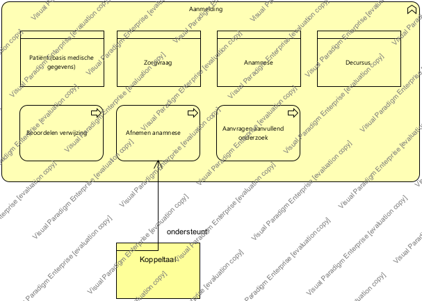

|
|
|
Generieke architectuur : Model . Architectuur : Package . Business architectuur : Package . Geestelijke gezondheidszorg : Package . Zorgprocessen - Geestelijke gezondheidszorg : Package
 ArchiMate Diagram - Zorgverlening - Aanmelding (GGz)
ArchiMate Diagram - Zorgverlening - Aanmelding (GGz)
 link
link
| Jump to: |
|  |
| Dit domein bevat de activiteiten op het gebied van de aanmelding van (nieuwe) patiënten, doorverwezen door een erkende verwijzer. |